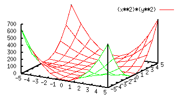
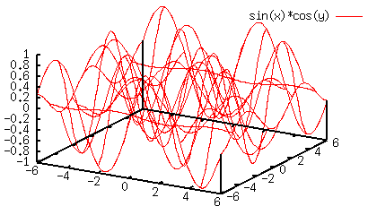
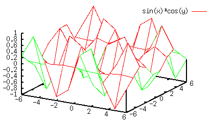
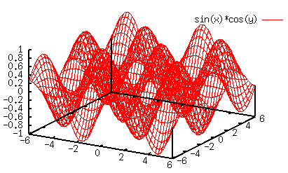
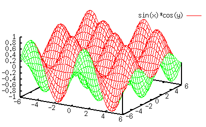
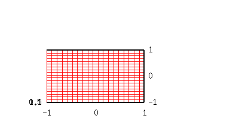
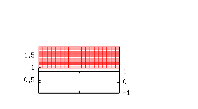
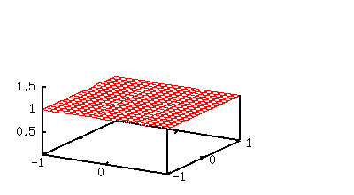
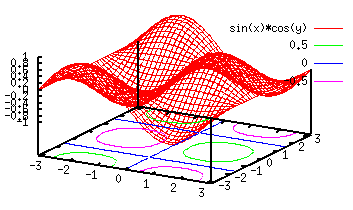
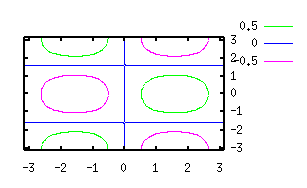

- not so Frequently Asked Questions -
update 2004/9/15
|
|
- not so Frequently Asked Questions - update 2004/9/15
|
|
not so FAQ |
About 3-Dimensional Plot (No.1)Why the origin of Z-axis is not on the XY-plane ?In the splot , the zero-point of Z-Axis is placed above the XY plane. To move this origin onto the XY plane, use set ticslevel . When ticslevel=0, the zero of Z-Axis moves to on the XY plane. gnuplot> set ticslevel 0 gnuplot> splot (x**2)*(y**2) 
 I want to make a surface mesh finer.In a 3-dimensional plot, mesh size (XY coordinate) is determined by isosample . The smaller this number, the more rough mesh you get. The default is 10. If the mesh is too rough, it sometimes makes trouble when a hidden line option set hidden3d is used. The following example shows a 3-dimensional plot of the function z=sin(x)*cos(y) with the isosample of 10. The top drawing is without the hidden line removal, and the lower is with it. 

To avoid this problem, make isosample larger. The next we set it to 40. To make X and Y meshes different, try set isosample 20,40. gnuplot> set isosample 40 

How do I change a view point ?The view point in the 3-dimensional plot is controlled by set view command. The default setting is,
gnuplot> show view
view is 60 rot_x, 30 rot_z, 1 scale, 1 scale_z
Initially (before rotation), your screen is parallel to the X-Y plane and the Z-axis is perpendicular to that. 
Firstly, the X-axis is rotated to 60 degrees (rot_x), then the Z-axis slants. 
Next, the new Z-axis is rotated to 30 degrees (rot_z). This is the view point which splot sets it as default. 
The set view command rotates the graph.
How do I change contours ?Contour lines can be controlled by the set cntrparam command. gnuplot> set contour gnuplot> set cntrparam levels 10 gnuplot> set cntrparam levels incremental -1, 0.2, 1 gnuplot> set cntrparam levels discrete -0.2, -0.5, 0.2, 0.5 The above example shows three ways to control the contours. The keyword levels defines the level to which contour curves are drawn. The above, levels 10 indicates that ten contour lines are drawn. The next, incremental defines the initial, increment, and final values. You can also define the height at which the contour lines are to be shown by the command levels discrete . A legend for contour lines is placed in the legend of the graph. To erase the contour's legend, use the set noclabel command. In this case all line kinds for the contour lines become the same, which is just next line kind to the surface plot. The line kinds of the contours are the next to that used to the surface. I guess there is no way to control those line kinds arbitrarily. You have to use some external tools such as Tgif to edit the style of the contour lines. I want to draw only contours on the 2-dimensional plot.When your view point is right above the XY plane, you get a two-dimensional plot of the contours lines. Firstly set the view point at 0,0 by set view 0,0 , and indicate set nosurface to hide the surface. gnuplot> set contour base gnuplot> set nosurface gnuplot> set view 0,0

set view 60,30

set view 0,0
The Y-axis goes to the right-side by the set view 0,0 command. If you want to move it to the left-side, use set view 180,180. The Y label becomes horizontal in this method. If you want to make it vertical, use "table" as follows. You can make a better two-dimensional plot of the contours by using the table terminal. The contour lines are once written on a data file with the set term table command, which produces two-dimensional data of various contour lines. See an example in our Gallery. gnuplot> set term table gnuplot> set output "table.dat" gnuplot> replot gnuplot> set output gnuplot> set term x11 gnuplot> plot "table.dat" using 1:2 with lines [ver.4] ONLY ! The two-dimensional plot with a color-map can be done easily with the pm3d terminal. |